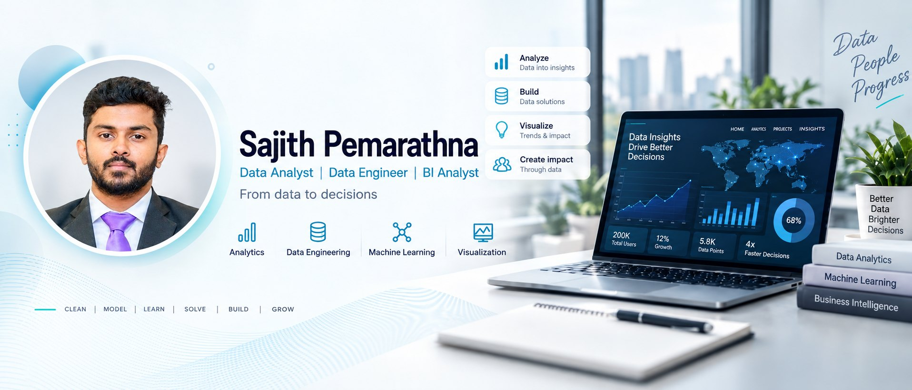

Air Freight Cost and Reliability
Found $1.79M of air freight spend with no delivery justification, across 10,324 shipments to 43 countries.

Four case studies, each opening with the question it set out to answer and closing with what the answer is worth.
Found $1.79M of air freight spend with no delivery justification, across 10,324 shipments to 43 countries.
Lakehouse pipeline turning 3M+ events into daily funnel metrics. The top 20% of products drive close to 80% of revenue.
99,441 orders and $13.6M in revenue modelled in PostgreSQL. A 3.12% repeat rate reframes the business model.
MSc thesis forecasting German energy demand to 2030 with LSTM networks, built on 26 years of Destatis data.
Everything listed here is used in at least one of the projects above.
Power BI with DAX and Power Query, Tableau, Looker Studio, Excel, KPI definition, funnel and cohort analysis
SQL, Python with Pandas and NumPy, PostgreSQL, BigQuery, dimensional modelling
ETL and ELT design, PySpark, Spark SQL, Delta Lake, Databricks, data quality checks
Time series forecasting, Random Forest, XGBoost, LSTM, TensorFlow and Keras, RMSE, MAE and MAPE
Two years as a data analyst at Synergen Health, where I automated claims performance reporting in SQL, Python and Power BI and cut manual reporting effort by around 20%. Since then, an MSc in Data Analytics in Berlin and part-time operations work in high-volume fulfilment, which showed me what inventory and shortage data looks like before it reaches a dashboard. I am looking for an analyst role where the numbers change what someone does next.